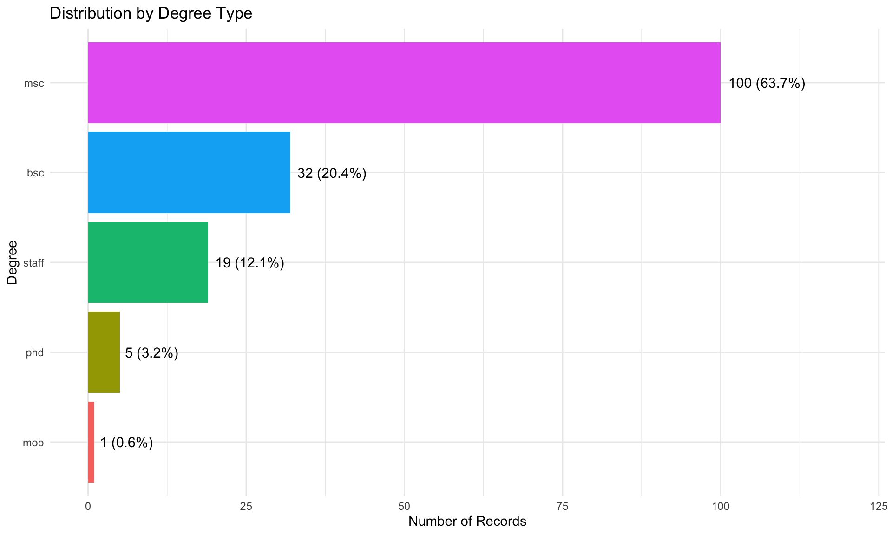
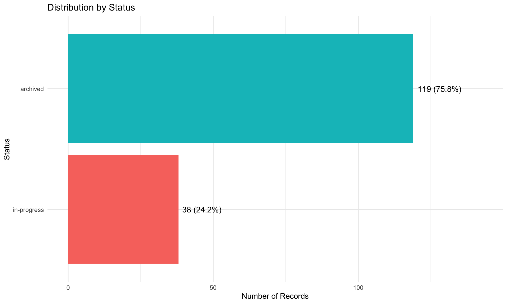
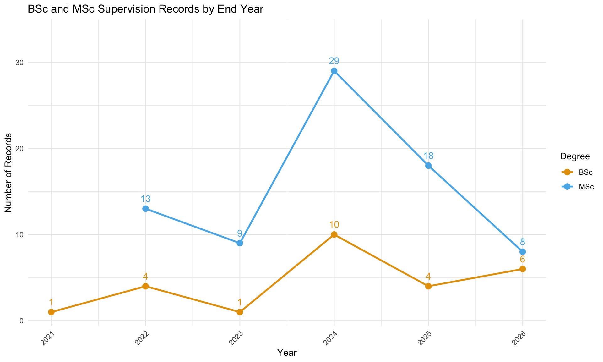
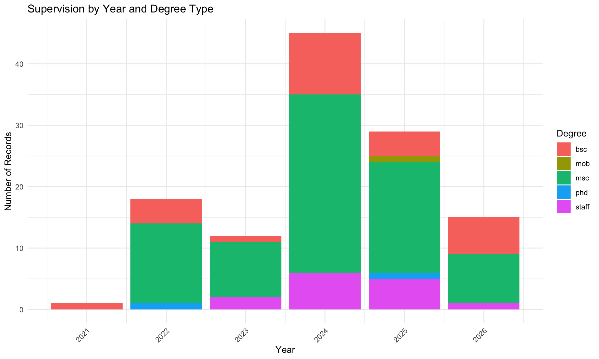
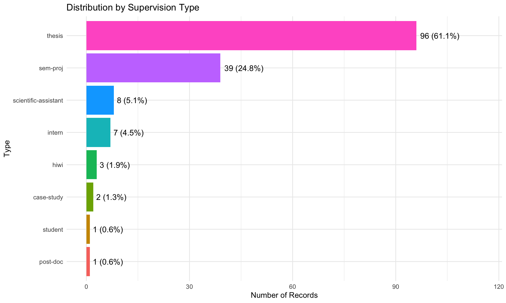
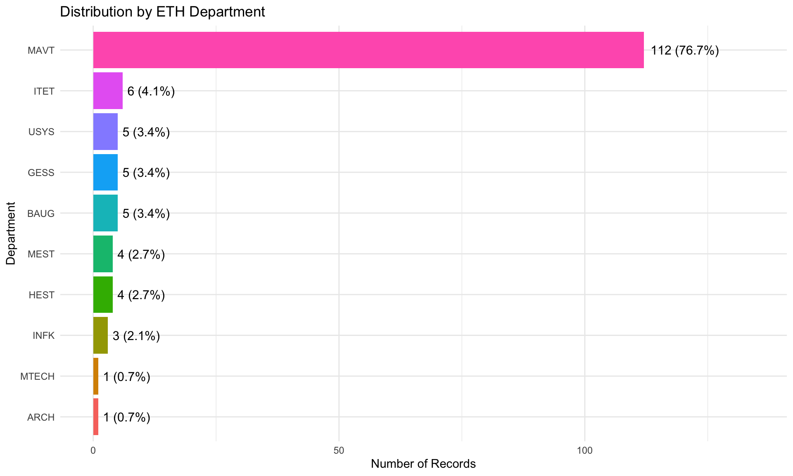
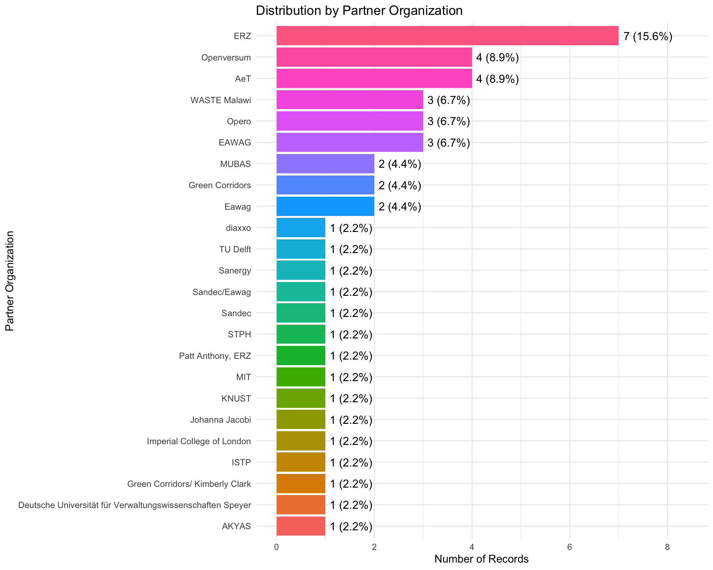
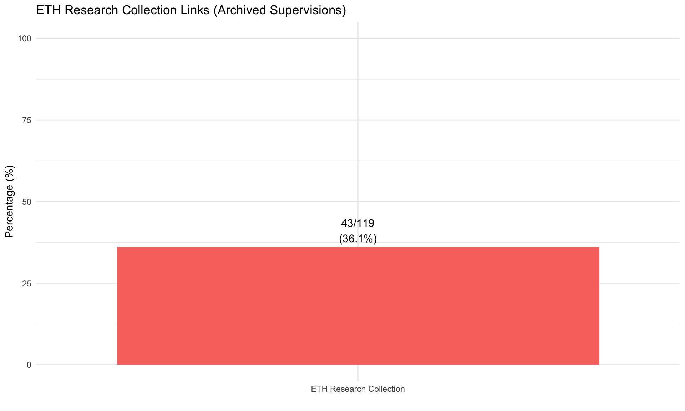

library(tidyverse)library(lubridate)library(scales)library(knitr)library(here)# Load datapeople <-read_csv(here("data", "people.csv"), show_col_types =FALSE)# Derive year from end_date if year column is all NAif (all(is.na(people$year))) { people <- people |>mutate(year =year(end_date))}# Set theme for all plotstheme_set(theme_minimal())
Overview
This analysis covers the supervision records from the GHE research group. Names and identifiers have been removed for privacy reasons.
Key Statistics:
Total supervision records: 157
Unique degree types: 5
Year range: 2021 to 2026
Archived: 119
In progress: 38
Supervision by Degree Type
Code
# Prepare datadegree_data <- people |>filter(!is.na(degree)) |>count(degree, sort =TRUE) |>mutate(degree =fct_reorder(degree, n),pct =round(n /sum(n) *100, 1) )# Create plotdegree_data |>ggplot(aes(x = n, y = degree, fill = degree)) +geom_col(show.legend =FALSE) +geom_text(aes(label =paste0(n, " (", pct, "%)")),hjust =-0.1, size =4) +labs(title ="Distribution by Degree Type",x ="Number of Records",y ="Degree") +expand_limits(x =max(degree_data$n) *1.2)

Supervision by Degree Type
Degree
Count
Percentage (%)
msc
100
63.7
bsc
32
20.4
staff
19
12.1
phd
5
3.2
mob
1
0.6
Supervision Status
Code
# Prepare datastatus_data <- people |>filter(!is.na(status)) |>count(status, sort =TRUE) |>mutate(status =fct_reorder(status, n),pct =round(n /sum(n) *100, 1) )# Create plotstatus_data |>ggplot(aes(x = n, y = status, fill = status)) +geom_col(show.legend =FALSE) +geom_text(aes(label =paste0(n, " (", pct, "%)")),hjust =-0.1, size =4) +labs(title ="Distribution by Status",x ="Number of Records",y ="Status") +expand_limits(x =max(status_data$n) *1.2)

Yearly Trends
Code
# Prepare data - BSc and MSc onlyyearly_data <- people |>filter(!is.na(year), degree %in%c("bsc", "msc")) |>count(year, degree)if (nrow(yearly_data) >0) {# Create plot with two lines yearly_data |>ggplot(aes(x = year, y = n, color = degree)) +geom_line(linewidth =1) +geom_point(size =3) +geom_text(aes(label = n), vjust =-1, size =4, show.legend =FALSE) +labs(title ="BSc and MSc Supervision Records by End Year",x ="Year",y ="Number of Records",color ="Degree") +scale_x_continuous(breaks =seq(min(yearly_data$year), max(yearly_data$year), 1)) +scale_color_manual(values =c("bsc"="#E69F00", "msc"="#56B4E9"),labels =c("bsc"="BSc", "msc"="MSc")) +expand_limits(y =max(yearly_data$n) *1.15) +theme(axis.text.x =element_text(angle =45, hjust =1))} else {cat("No year data available")}

Code
# Prepare datayearly_degree_data <- people |>filter(!is.na(year), !is.na(degree)) |>count(year, degree)if (nrow(yearly_degree_data) >0) {# Create plot yearly_degree_data |>ggplot(aes(x = year, y = n, fill = degree)) +geom_col(position ="stack") +labs(title ="Supervision by Year and Degree Type",x ="Year",y ="Number of Records",fill ="Degree") +scale_x_continuous(breaks =seq(min(yearly_degree_data$year), max(yearly_degree_data$year), 1)) +theme(axis.text.x =element_text(angle =45, hjust =1))} else {cat("No year/degree data available")}

Supervision Type
Code
# Prepare datatype_data <- people |>filter(!is.na(type)) |>count(type, sort =TRUE) |>mutate(type =fct_reorder(type, n),pct =round(n /sum(n) *100, 1) )# Create plottype_data |>ggplot(aes(x = n, y = type, fill = type)) +geom_col(show.legend =FALSE) +geom_text(aes(label =paste0(n, " (", pct, "%)")),hjust =-0.1, size =4) +labs(title ="Distribution by Supervision Type",x ="Number of Records",y ="Type") +expand_limits(x =max(type_data$n) *1.2)

ETH Department Distribution
Code
# Prepare datadept_data <- people |>filter(!is.na(eth_department)) |>count(eth_department, sort =TRUE) |>mutate(eth_department =fct_reorder(eth_department, n),pct =round(n /sum(n) *100, 1) )if (nrow(dept_data) >0) {# Create plot dept_data |>ggplot(aes(x = n, y = eth_department, fill = eth_department)) +geom_col(show.legend =FALSE) +geom_text(aes(label =paste0(n, " (", pct, "%)")),hjust =-0.1, size =4) +labs(title ="Distribution by ETH Department",x ="Number of Records",y ="Department") +expand_limits(x =max(dept_data$n) *1.2)} else {cat("No ETH department data available")}

Partner Organizations
Code
# Prepare datapartner_data <- people |>filter(!is.na(partner_organisation)) |>count(partner_organisation, sort =TRUE) |>mutate(partner_organisation =fct_reorder(partner_organisation, n),pct =round(n /sum(n) *100, 1) )if (nrow(partner_data) >0) {# Create plot partner_data |>ggplot(aes(x = n, y = partner_organisation, fill = partner_organisation)) +geom_col(show.legend =FALSE) +geom_text(aes(label =paste0(n, " (", pct, "%)")),hjust =-0.1, size =4) +labs(title ="Distribution by Partner Organization",x ="Number of Records",y ="Partner Organization") +expand_limits(x =max(partner_data$n) *1.2)} else {cat("No partner organization data available")}

Supervision Duration
Note: Duration analysis requires both start and end dates. Since start dates are not available in the current dataset, this section shows data availability instead.
Code
# Check data availability for duration analysishas_start_date <-sum(!is.na(people$start_date))has_end_date <-sum(!is.na(people$end_date))cat(paste0("Records with start date: ", has_start_date, "/", nrow(people), "\n"))
Records with start date: 0/157
Code
cat(paste0("Records with end date: ", has_end_date, "/", nrow(people), "\n"))
Records with end date: 120/157
Code
if (has_start_date >0&& has_end_date >0) {# Calculate duration for archived supervisions duration_data <- people |>filter(!is.na(start_date), !is.na(end_date), status =="archived") |>mutate(duration_months =interval(start_date, end_date) /months(1) )if (nrow(duration_data) >0) {# Create histogram duration_data |>ggplot(aes(x = duration_months)) +geom_histogram(binwidth =2, fill ="steelblue", color ="white") +labs(title ="Distribution of Supervision Duration (Archived)",x ="Duration (months)",y ="Count") +theme(axis.text.x =element_text(angle =0, hjust =0.5)) }} else {cat("Insufficient data for duration analysis (missing start dates)")}
Insufficient data for duration analysis (missing start dates)
Code
# This chunk is disabled since start_date data is not availableif (exists("duration_data") &&nrow(duration_data) >0) {# Prepare data duration_by_degree <- duration_data |>filter(!is.na(degree)) |>group_by(degree) |>summarise(n =n(),mean_duration =mean(duration_months, na.rm =TRUE),median_duration =median(duration_months, na.rm =TRUE),.groups ="drop" ) |>mutate(degree =fct_reorder(degree, mean_duration))# Create plot duration_by_degree |>ggplot(aes(x = mean_duration, y = degree, fill = degree)) +geom_col(show.legend =FALSE) +geom_text(aes(label =paste0(round(mean_duration, 1), " mo")),hjust =-0.1, size =4) +labs(title ="Average Supervision Duration by Degree Type",x ="Mean Duration (months)",y ="Degree") +expand_limits(x =max(duration_by_degree$mean_duration) *1.2)}
Data Publication Metrics
Code
# Calculate publication rates for archived supervisionspub_data <- people |>filter(status =="archived") |>mutate(has_eth_collection =!is.na(eth_collection_link) & eth_collection_link !="NA" )if (nrow(pub_data) >0) {# Prepare summary data pub_summary <-tibble(metric =c("ETH Research Collection"),count =c(sum(pub_data$has_eth_collection)),total =nrow(pub_data) ) |>mutate(pct =round(count / total *100, 1))# Create plot pub_summary |>ggplot(aes(x = metric, y = pct, fill = metric)) +geom_col(show.legend =FALSE) +geom_text(aes(label =paste0(count, "/", total, "\n(", pct, "%)")),vjust =-0.2, size =4) +labs(title ="ETH Research Collection Links (Archived Supervisions)",x ="",y ="Percentage (%)") +ylim(0, 100) +expand_limits(y =max(pub_summary$pct) *1.3)} else {cat("No archived supervision data available")}

Status by Degree Type
Code
# Prepare datastatus_degree_data <- people |>filter(!is.na(status), !is.na(degree)) |>count(degree, status)# Create plotstatus_degree_data |>ggplot(aes(x = degree, y = n, fill = status)) +geom_col(position ="dodge") +labs(title ="Status Distribution by Degree Type",x ="Degree",y ="Count",fill ="Status") +theme(axis.text.x =element_text(angle =45, hjust =1))